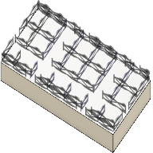

<div id="group_supports_supportproperties_structure_fragment"><p>ポリラインを断片化すると、印刷後のサポートの分裂がより簡単になります。</p>
<table class="tipTable" cellspacing="10">
<tr>
<td><center></center></td>
</tr><tr>
<td><center></center></td>
</tr></table>
</div>